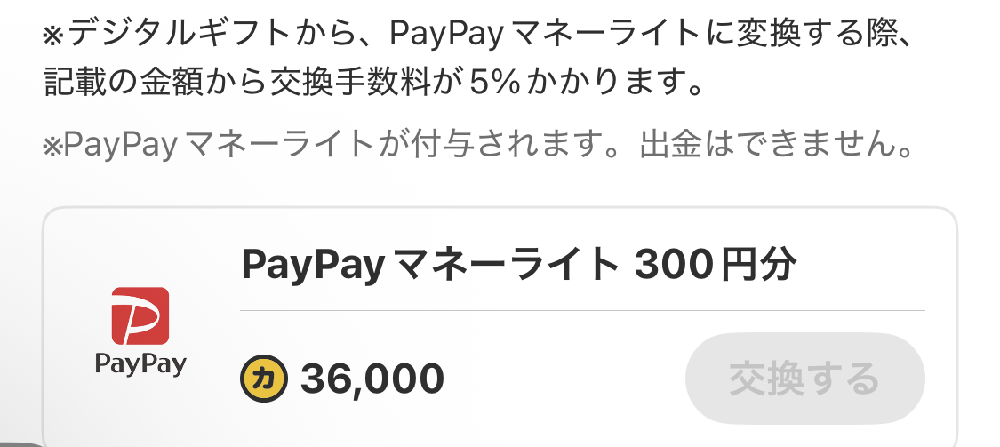
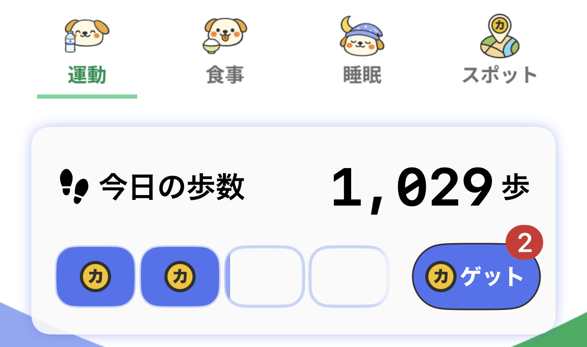
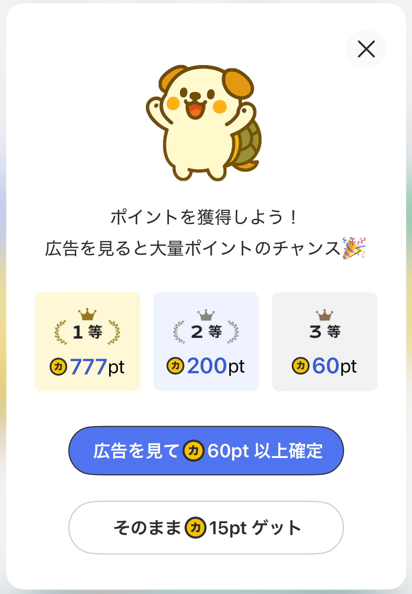
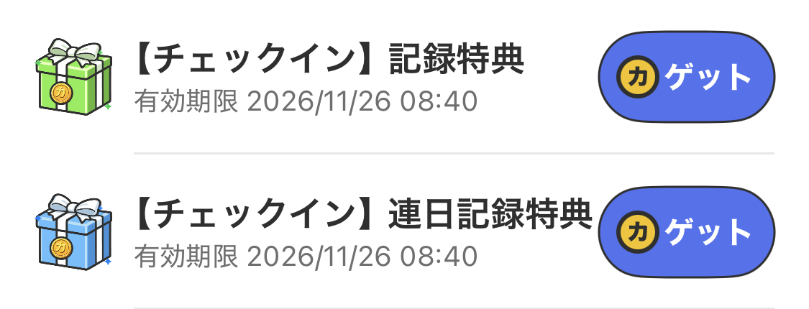
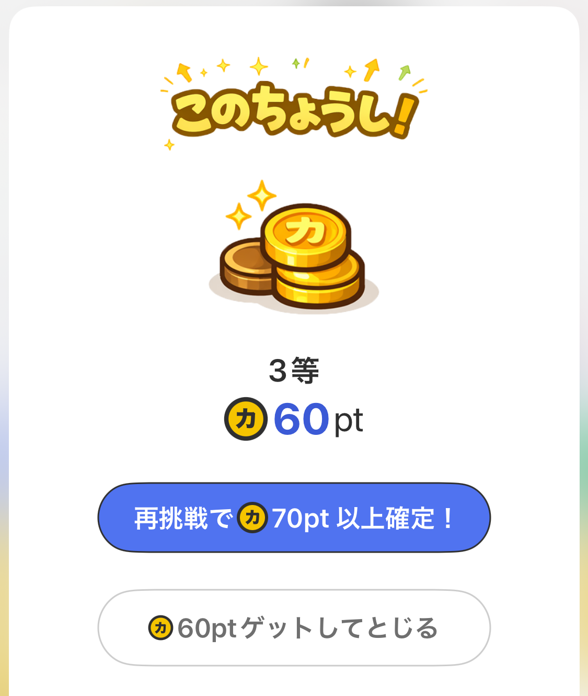

T63KTT
カルティポイントは、普段の生活を活かしてポイントを貯められるポイ活アプリです。
歩くだけでなく、電車での移動、食事や睡眠の記録、チェックインなど、ポイントを貯める方法が複数あります。
この記事では、カルティポイントの始め方から交換条件までを整理します。私が記録した抽選データをもとに、広告を見てそのまま受け取る場合と、再チャレンジする場合の違いも比べます。
結論：カルティポイントはどんな人におすすめ？
| 項目 | 評価 |
|---|---|
| 稼げる目安 | 月500〜700円相当を見込めます（広告ありの試算）。 |
| おすすめ度 | A｜4点 |
| 向いている人 | シンプルなアプリが好きな人 よく歩く・移動する人や、食事や睡眠のついでにアプリを開いて記録できる人。 |
| 向かない人 | 広告をほとんど見ずに月500円以上を目指したい人。 |
この記事の結論
- 歩数・移動だけでなく、食事・睡眠の記録やチェックインでも貯まります。
- 歩数・移動はゲージから、食事・睡眠・チェックインはBOXを開けて受け取ります。
- 同じ使い方でも、広告なしなら月約116円、毎日31回見るなら月約533円相当が目安です。
- 最初の交換は36,000ptで300円分です。 初回交換には、対象機能で累計5,000pt以上を獲得するなどの条件があります。
招待コードと始め方
筆者のカルティポイントの招待コードは「T63KTT」です。
招待コードは、アプリを初めて起動したときの入力画面で登録します。
※あとから入力はできません。

歩数・移動・食事・睡眠でポイントが貯まるポイ活アプリ
株式会社Sapeet ／ 無料招待特典は条件達成後、14日以内に自動付与されます。公式ヘルプ：招待特典の条件
初めて使うときの手順
- 上のストアボタンからカルティポイントをインストールします。
- 招待コードを使う場合は、初回起動時の入力画面で「T63KTT」を登録します。
- 歩数・移動の計測に必要な設定を確認します。まずは少し歩いて、アプリに歩数が反映されるか見てみましょう。
カルティポイントの基本情報
カルティポイントは、株式会社Sapeetが提供する健康ポイ活アプリです。
歩数や移動といった身体活動だけでなく、食事・睡眠の記録でもポイントを貯められるのが特徴です。
| 項目 | 内容 |
|---|---|
| アプリ名 | カルティポイント |
| 運営会社 | 株式会社Sapeet |
| 利用料金 | 無料 |
| 対応端末 | iPhone・Android |
| 主な貯め方 | 歩数・移動・食事・睡眠・チェックイン |
| ポイント交換 | 他社ポイント・ギフト券など |
| 最低交換条件 | 36,000ptで300円分 |
| ポイント交換の追加条件 | 会員登録・電話番号認証・対象機能で累計5,000pt獲得 |
ポイントはゲストユーザーでも貯められますが、交換には会員登録が必要です。
最初からすべての機能を覚える必要はありません。まずは歩数と移動を確認し、慣れてから食事や睡眠の記録を追加すると、使い方を把握しやすくなります。
交換先・交換条件
カルティポイントで貯めたポイントは、各種ポイントやギフト券に交換できます。
ただし、ポイントが貯まっただけでは交換できません。交換に必要なポイント数と、利用条件の両方を確認しておきましょう。
何ポイントで交換できる？
公式ヘルプで案内されている最低交換条件は、次のとおりです。
| 必要ポイント | 交換できる金額 | 換算レート |
|---|---|---|
| 36,000pt | 300円分 | 120pt＝1円相当 |
たとえば、12,000ptを貯めても、その時点では最低交換条件に達していません。
まずは36,000ptを最初の目標にすると分かりやすいでしょう。
※上記は公式ヘルプに掲載されている最低交換条件です。すべての交換先・交換額に同じレートが適用されるとは限りません。
どんなものに交換できる？
デジタルギフトを経由して、交換することが可能です。
デジタルギフト経由のため、交換先によっては追加で手数料がかかります。ご注意ください。
| 手数料がかかる交換先 | 手数料 | 36,000pt交換時 |
|---|---|---|
| PayPayマネーライト | 5% | 285円分 |
| WAON POINT eギフト | 2% | 294円分 |
| Vポイント | 5% | 285円分 |
| nanacoギフト | 5% | 285円分 |
| Ponta ポイントコード | 5% | 285円分 |
| ANA Pay ギフトコード | 4% | 288円分 |
※表の金額は、36,000ptを300円分として、そこから手数料を差し引いた場合の目安です。


交換するための3つの条件
ポイントの交換をするためには、以下の条件をすべて満たす必要があります。
- カルティ会員登録が完了している
- 電話番号認証が完了している
- 移動・歩数・食事・睡眠・スポットで、累計5,000pt以上を獲得している
特に注意したいのは3つ目です。
招待特典などのポイントだけで残高が36,000ptに達しても、それだけでは交換条件を満たせません。
そのため、招待特典だけに頼らず、普段の歩数や食事記録などでもポイントを貯めていきましょう。
ポイントの貯め方
カルティポイントでは、日常生活の複数の行動からポイントを貯められます。
まずは、どの場面で何をすればよいかを整理します。
| 貯め方 | 1日の上限 | 何をすると受け取れるか |
|---|---|---|
| 歩数 | 10,000歩｜20回 | 計測された歩数に応じてポイントを受け取る |
| 移動 | 40km｜20回 | 計測された移動距離に応じてポイントを受け取る |
| 食事 | 朝・昼・夕食・連続｜4回 | 食事を記録してポイントを受け取る |
| 睡眠 | 起床・就寝・連続｜3回 | 起床・就寝を記録してポイントを受け取る |
| チェックイン | 対象スポット・連続｜21回 | 対象スポットでチェックインする |
歩数・移動の基本情報
歩数と移動は、それぞれ20ゲージ貯めることが可能です。
歩数は500歩で1ゲージ貯まります。1日の上限は10,000歩なので、最大20回受け取れます。




移動については1日40kmを上限として、2kmで1ゲージがたまります。そのため移動についても1日に最大20回ゲージを回収することが可能です。
歩数と移動のリセット時間は午前4時のため、24時切り替えや午前３時切り替えのアプリに比べて、比較的猶予はありますが未回収だともったいないのでしっかり回収しておきましょう。
なお、他アプリであるようなアイテムを使用することでゲージの上限が増えたり、2倍貯まりやすくなるなどはありません。
むしろシンプルでわかりやすいアプリだと思います。
食事・睡眠の基本情報
カルティポイントでは、朝食・昼食・夕食に加え、起床・就寝の時間の記録をすることでポイントを貯められます。
食事については1日最大3回、時間を入力することで1回ずつBOXがたまります。当日の記載を忘れてしまった場合でも前日分の記録は行うことができ、それもBOXがたまります。
また、当日分の記載は1回毎に2時間のクールタイムがありますが、前日分の記録にクールタイムはありません。
2日続けて記録を行うことで連続記録特典で追加で1BOXを得ることもできます。
睡眠の仕様は食事とほぼ同じですが、違いについては、1日最大2回の時間の入力のため、1回分BOXを得るチャンスが少ないということだけです。
チェックインの基本情報
チェックインは、対象スポットに立ち寄った際にポイントを獲得できる機能です。利用方法は以下です。
- アプリ内のスポットタブをタップします
- 地図上にあるチェックインスポットの半径50m以内に入る
- チェックインスポットをタップ
- チェックインするをタップ
チェックインについても食事・睡眠と同様に、連続記録特典があります。
1日20回のチェックインができ、連続記録特典も合わせると、1日の上限としては21個のBOXを手に入れることが可能です。


広告再生と再チャレンジは分けて評価する
カルティポイントでは、ゲージやBOXの回収時に、広告を見る・そのまま獲得する、のどちらかを選ぶことが可能です。
広告を見る場合、広告再生後に抽選が行われ、1等・2等・3等などの結果が出ます。
そして、広告再生後の抽選が3等だった場合、再チャレンジを行うことができ、再チャレンジ後も1等・2等・3等の抽選を受けることが可能です。
ポイモルでは、この抽選結果を実際に記録して検証しています。
抽選結果として記録されている主なポイントは、次のとおりです。
| 等級 | 初回抽選 | 再チャレンジ |
|---|---|---|
| 1等 | 777pt | 777pt |
| 2等 | 200pt | 200pt |
| 3等 | 60pt | 70pt |
1等の777ptは魅力的ですが、毎回獲得できるわけではありません。
実測データ｜初回と再チャレンジの当選率
2026年11月24日に確認した集計では、初回の結果で受け取った記録が1,790件、再チャレンジの結果が926件ありました。再チャレンジできるのは初回で3等が出たときだけなので、初回の当選率を出す際は、再チャレンジに進んだ926件も初回3等に含めています。
| 等級 | 初回（2,716回） | 再チャレンジ（926回） |
|---|---|---|
| 1等 | 21回（0.77%） | 12回（1.30%） |
| 2等 | 63回（2.32%） | 17回（1.84%） |
| 3等 | 2,632回（96.91%） | 897回（96.87%） |
初回の結果をそのまま受け取るとした場合は、広告1回あたり平均68.79pt（約0.57円相当）です。
初回で3等が出たら、再チャレンジした方がお得？


| 比較方法 | 獲得ポイント | 広告1回あたり |
|---|---|---|
| 初回3等で確定 | 60pt | 60pt |
| 再チャレンジ | 平均81.55pt | 平均40.77pt |
※再チャレンジ側は、最初の3等を出すための広告と、追加の再チャレンジ広告を合わせた2回で計算しています。
再チャレンジ後の報酬は、最初の60ptに上乗せされるのではなく、置き換わります。最初の3等で確定する場合と比べると、獲得ポイントは平均21.55pt増えます。
一方、広告は1回から2回に増えるため、広告1回あたりの獲得ポイントは約32.0%減ります。
つまり、再チャレンジは「もらえるポイントを増やす方法」ではありますが、「広告1回あたりの効率を上げる方法」とは限りません。
新しい初回抽選に進めるなら、そちらに広告を使う方が効率的というのが、現時点での私の判断です。
一方、1日に利用できる回数が限られ、追加でポイントを獲得する機会がない場合には、再チャレンジで獲得量を増やす考え方もあります。
大切なのは、獲得ポイントの合計と広告効率を分けて考えることです。
※上記はポイモルの記録に基づく実測結果です。アプリが公式に保証する当選確率ではありません。
利用前の注意点
カルティポイントを始める前に、次の点を確認しておきましょう。
ポイントが貯まっても、すぐに交換できるとは限らない
最低交換ポイントに加えて、会員登録・電話番号認証・対象機能での累計獲得条件があります。特に招待特典だけでは交換条件を満たせない点に注意してください。
広告を見る回数で効率が変わる
動画広告を利用することで、より多くのポイントを受け取れる場合があります。
ただし、追加広告を見ることで獲得ポイントの合計が増えても、広告1回あたりの効率が改善するとは限りません。
ポイントの計測と受け取りは別
歩数や移動距離が計測されても、それだけで必要な受取操作が完了したとは限りません。
アプリを開いたときには、受け取れるポイントが残っていないか確認しましょう。
交換条件や抽選内容は変更される可能性がある
交換先・交換レート・広告報酬などは、今後変更される可能性があります。
特にポイント交換は、実行前にアプリ内の最新条件を確認してください。
おすすめの使い方
毎日31回分を回収する場合：広告の回数で月いくら変わる？
今回、歩数や移動などの条件は以下に統一したうえで、広告再生の回数で比較を行います。
合計31回分
- 毎日8,000歩 → 歩数16回分
- 移動7km → 移動3回分
- 食事3回 → BOX4回分
- 睡眠2回 → BOX3回分
- チェックイン4か所 → BOX5回分
食事と睡眠、チェックインは継続ボーナス込みで、再チャレンジはしません。
| 1日の広告回数 | 30日間の獲得pt | 円相当 |
|---|---|---|
| 0回 | 13,950pt | 約116円 |
| 10回 | 約30,087pt | 約251円 |
| 31回（すべて） | 約63,976pt | 約533円 |
広告は1日10回までと決めるなら、たとえば歩数16回分のうち10回だけ広告を見て、残りの21回分は広告なしで受け取ります。30日で約251円相当ですが、最低交換額の300円には届きません。
試算では、広告なしは1回15pt、広告ありは初回抽選2,716回から求めた平均68.79ptとし、36,000pt＝300円分で換算しています。招待特典は含めていません。
詳しい調査はこちらの記事で行なっています。（検証記事は準備中）
参考：毎回再チャレンジした場合
毎日31回分をすべて広告ありで回収し、初回で3等が出るたびに再チャレンジした場合と、しなかった場合を比べます。
| 30日間の比較 | 再チャレンジなし | 再チャレンジあり |
|---|---|---|
| 広告再生 | 930回 | 約1,831回 |
| 獲得ポイント | 約63,976pt | 約83,396pt |
| 円相当 | 約533円 | 約695円 |
実測の初回3等率（約96.9%）と再チャレンジ平均（81.55pt）を使った試算です。追加で約901回の広告を見ると、約162円相当増える計算です。
毎日上限の68回分を回収する場合：300円分まで何回必要？
残高ゼロから300円分の交換に必要な36,000ptを貯めるには、すべて広告ありなら約524回、広告なしなら2,400回分が目安です。
1日に貯められる上限は、歩数20回分、移動20回分、チェックイン21回分、食事4回分、睡眠3回分の合計68回分です。以下は、毎日この上限までゲージとBOXを貯めて回収する場合の比較です。
| 受け取り方 | 必要な回数 | かかる日数 |
|---|---|---|
| すべて広告あり | 広告 約524回 | 約8日 |
| 広告なし | 回収 2,400回分 | 最短36日 |
| 広告あり・なしを併用 |
広告は約101回。 |
30日 |
広告なしで30日以内に貯めるには1日80回分が必要ですが、上限は68回分です。毎日すべて回収しても、30日間では30,600pt（255円相当）にとどまります。
30日で300円分を目指すには、あと5,400pt必要です。広告を見ると1回あたり平均53.79pt多くもらえるので、全2,040回のうち約101回（1日3〜4回）を広告ありにするのが目安です。毎日31回分のケースより広告が少なくて済むのは、残りの1,939回分も広告なしで回収するからです。
招待特典と再チャレンジは含めていません。広告ありは実測平均68.79ptで計算しているため、実際に必要な広告回数や日数は抽選結果によって変わります。
よくある質問
Q. カルティポイントは無料で使える？
はい。公式サイトでは、アプリのダウンロードからポイント交換まで無料と案内されています。ただし、通信料は自己負担です。
Q. 歩かなくてもポイントは貯まる？
貯められます。食事や睡眠の記録など、歩数以外にもポイントを獲得する方法があります。
Q. 何ポイントから交換できる？
公式ヘルプ上の最低交換条件は、36,000ptで300円分です。
別途、会員登録・電話番号認証・対象機能での累計5,000pt獲得が必要です。
Q. 広告を見ないとポイントは貯まらない？
広告なしでもポイントの獲得は可能です。広告を再生しない場合、獲得ポイントは15pt（0.125円）、広告を再生することで最低60pt（0.5円）を獲得することが可能です。
Q. 再チャレンジはした方がいい？
広告1回あたりのポイント効率を重視するなら、ポイモルの実測では再チャレンジしない方が有利でした。
ただし、追加の抽選機会がほかにない場合などは、再チャレンジで獲得ポイントを増やす選択にも意味があります。
Q. 招待コードはいつ入力する？
アプリ初回起動時の招待コード入力画面で登録します。
招待特典には本会員登録や累計1,000pt獲得などの条件があります。
まとめ
カルティポイントは、通勤中に貯めたゲージを受け取ったり、帰宅後に食事や睡眠を記録したりと、普段の生活に合わせて使えます。まずは再チャレンジをせず、その日に貯まったゲージやBOXを受け取るところから始めるのがおすすめです。
今回の実測では、再チャレンジをすると獲得ptは増えましたが、広告1再生あたりの獲得ptは下がりました。見る本数を決めているなら、追加の広告より、まだ受け取っていないゲージやBOXの初回抽選を優先しましょう。
ポイモルでは今後も、実際の記録に基づいてポイント獲得効率を検証し、使い方の判断材料を整理していきます。